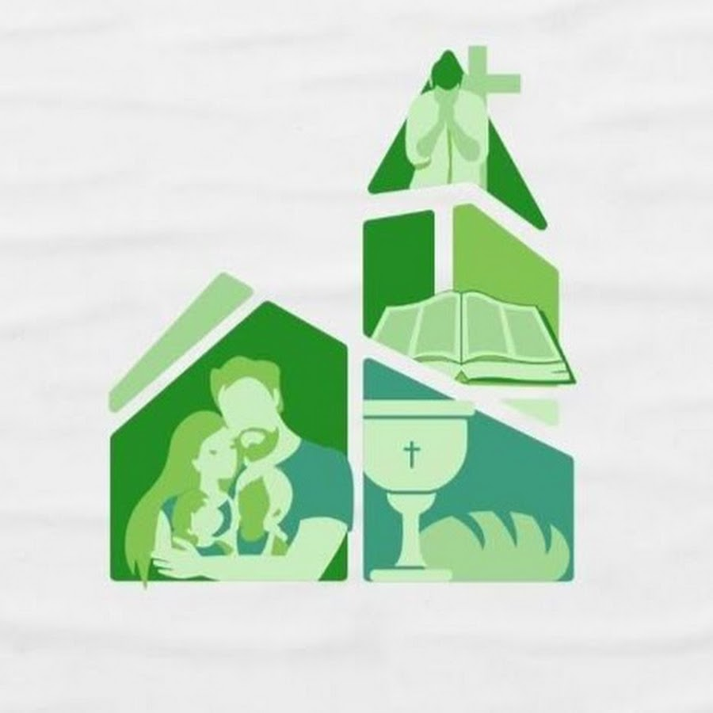

Cultos
Mensagens do culto público

Acompanhe nosso canal
Os cultos de domingo e os estudos são gravados e publicados no nosso canal. Inscreva-se e ative as notificações para ser avisado de cada novo vídeo.
Culto público aos domingos às 18h30. Venha nos visitar.